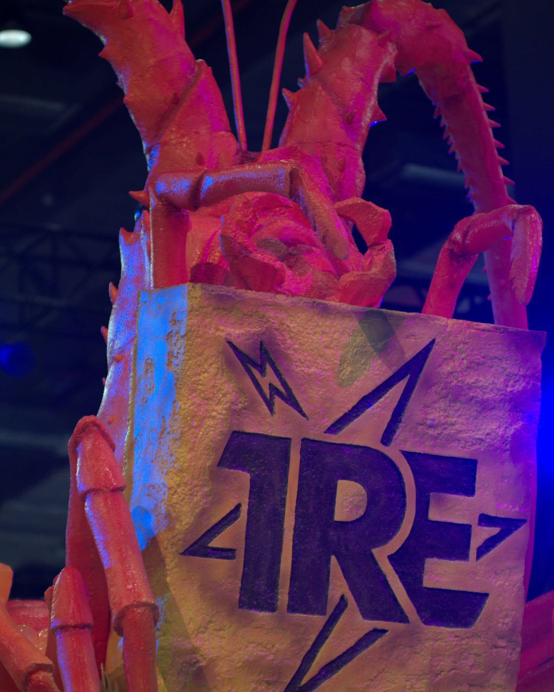

一場失敗的 AI workshop，但我覺得它非常成功
「你怎麼知道它裝好了沒有？」
8 月 22 號第一場 workshop，這句話我被問了好幾次。
那天我留了一個小時裝軟體。之前參加別人辦的 workshop，主辦方覺得三十分鐘就夠了，我已經多給一倍。結果裝了快兩個小時。
七個學員，在我家。我原本想教大家用 terminal，再加兩個比較順手的工具，Ghostty 跟 Zed。內容準備了三個小時，最後大概只講了兩三成，照原本的 agenda 算，有七成是失敗的。大家也幾乎沒時間真的動手，做一件自己的事。
所以講到第一場，我一直說，這是一場失敗的 AI workshop，但我覺得它非常成功。失敗是字面上的意思，整場完全沒照 agenda 走。但這是第一場，我腦子裡轉了好幾個月的東西，總算真的做出來了。最後大部分人都在自己的電腦上裝好了 Codex 或 Claude Code（OpenAI 和 Anthropic 各自做的 agentic AI 工具），第一次碰了 terminal，對 agentic AI 也大概有個底。有人回家就開始用了。
那兩個小時還讓我第一次這麼清楚地看到，大家到底卡在 terminal 的哪裡。

兩個小時去哪了
回頭看，那天真正在打指令的時間其實不多，時間都被問題吃掉了。每條指令我都放在 slide 上，複製貼上就好，大家卡住的地方根本不在指令。
第一場我是從最底層教起。要在 terminal 裡裝 Codex 或 Claude Code，得先裝 Homebrew，有些電腦還要先裝 Xcode。我沒想到光是解釋 Homebrew 和 Xcode 是什麼就要花時間，也沒想到 Xcode 要裝那麼久。有人是 Intel 晶片的舊 Mac，有人用 Windows，還有一台 2013 年的 MacBook，系統太舊，怎麼裝都裝不上。每台電腦狀況都不同，錯誤訊息也五花八門，只能一條一條看。
我們平常裝軟體，下載安裝檔，點幾下就好。terminal 版的 AI 工具不一樣，得先把環境建起來。Xcode 是什麼？Homebrew 是什麼？為什麼要裝？裝了要幹嘛？每多裝一樣，大家心裡就多一點不安，因為不知道自己到底在做什麼。
其實大家都很信任我，願意照著我的指令一步一步裝。那份不安跟信不信任我沒關係，比較像是碰到不懂的東西，本能就想往後退，表現出來就是一直問。第一場我對時間沒什麼概念，也沒擋著大家問。問題總要回答，時間就這樣失控了。
一個不會回話的視窗
後來我一直在想，大家為什麼這麼怕 terminal。
我們用圖形介面（GUI）也快二十年了。在 GUI 裡，你做什麼幾乎都馬上有回應。檔案拖進資料夾，看得到它進去；按鈕按下去，它會變；出了狀況，跳一個通知出來。圖示、顏色、畫面上的變化，都在跟你說「收到了」。

terminal 只有文字。你拖一個檔案進去，或改了什麼，它不會畫給你看，就回你幾行字。
最經典的是輸入密碼。第一次安裝要輸電腦密碼，在 terminal 裡打密碼，螢幕上什麼都不會出現，沒有星號，也沒有圓點。很多人就愣在那邊，我剛剛到底有沒有打進去？

系統內建的 terminal 幾乎沒有顏色，一整個螢幕同一個顏色的字，看久了很累。所以我會建議大家裝 Ghostty。它一樣是 terminal，但有顏色，字型也有變化，看起來舒服很多。這方面我覺得 Claude Code 在 terminal 裡呈現得也比 Codex 和 Gemini 豐富。
再來是檔案。AI 在你電腦上改東西，你看不到它動了哪個檔案、改成什麼樣，對自己正在做的事就完全沒有掌控感。

講到底，大家少的是「可確認感」。我做了一件事，到底有沒有發生，沒辦法馬上確認。terminal 就像一個很大的黑盒子，裡面在幹嘛，你看不到。很多人本來就覺得 agentic AI 是個黑箱，結果連安裝也是黑箱。
那天我還有點貪心。除了 terminal，我還想順便教 Ghostty 和 Zed，一個是比較順手的終端機視窗，一個是可以一邊看檔案、一邊跑 AI 的編輯器。光是在 terminal 裡裝成功，大家就已經有點招架不住，再多兩個新介面，又是一道門檻。講到後來，我只好當場畫一張圖。Codex、Claude 是引擎，Ghostty、Zed 只是外面那層皮，引擎都跑在 terminal 裡。
什麼都想讓它做，什麼都不想給它
第一場還有一個問題，我到現在都記得。有人問，能不能讓 agentic AI 自動買賣股票，幫忙賺錢？
我當時說 yes and no。理論上可以，但要先設好很多安全邊界，而且現在不少主流模型會直接拒絕幫人做這種財務操作。
很多人把 agentic AI 想得太大，覺得有了它什麼都能做，甚至自己都不用動手。這種想像跟媒體推波助瀾很有關係。年初 Clawdbot 爆紅的時候（後來改名叫 OpenClaw，就是那隻龍蝦），網路上傳的很多故事，我看了都覺得快變成科技神話了。

可是一講到安全，同一群人又希望越安全越好、隱私越多越好，最好什麼資料都不要給自己的 AI agent。
這兩個願望放在一起，其實互相打架。你想要它像貼身助理一樣幫你打理事情，它就得知道你的事。資料給得少，它貼不了身；給得多，你又擔心外洩。我覺得這點很真實，也不只是 workshop 裡才有的問題，之後不管哪一種 AI 產品，大概都躲不掉。
到現在沒改過的三條規矩
第一場雖然沒照計畫走，這門課的骨架倒是那天打下的。上課之前我替自己定了三條規矩，到現在一條都沒改。
第一，術語能少就少。LLM、MCP、agent 這些詞躲不掉，我就盡量用白話（plain language）講，不想讓大家一開始就被一堆概念壓住。
第二，先講安全，再講怎麼用。用 AI agent 有點像學開車，還沒學會開，就要先懂安全。安全我分成三種，資料被弄壞、隱私外流、莫名其妙被扣錢。最要緊的是備份。買一顆外接硬碟，把資料原封不動複製一份，再讓 AI 去動。那天我還請大家在桌面開一個資料夾，所有操作都只碰這個資料夾裡的東西。

第三，從生活裡天天會碰到的瑣事開始。有的 workshop 會讓你帶走一個看起來很 fancy 的網頁遊戲，我比較希望大家帶回家的，是很實際、真的幫得上自己生活的技能。
這條原則後來長成三個 use case。一是整理自己的資料夾，二是把手上的資料做成自己的看板（dashboard），三是把行事曆和訊息串起來，做一套自己的提醒和待辦。這三個是第二場以後才一個一個設計出來的，方向倒是第一場就定了。它們都貼著日常生活，在安全和隱私上，也一個比一個要多交給 AI 一點。
我想看見的那道缺口
ChatGPT 出來之後，大家一直在談 AI，有人怕它，有人想管住它。可是這些討論多半是對著一個想像中的 AI，連焦慮也是想像出來的。好像它什麼都會，但到底會什麼，沒人講得清楚。
我辦這個 workshop，是想把 agentic AI（就是能在你自己電腦上動手做事的 AI）帶給有專業能力、但不寫程式的人，也想親眼看看大家卡在哪裡，再回頭想下一代 AI 的介面該長什麼樣子。第一場給我的第一個答案，就是開頭那句「你怎麼知道它裝好了沒有？」
圖形介面花了幾十年，才做到讓我們點一下就知道發生了什麼事。agentic AI 能替我們做的事多太多了，可是它做完之後，要怎麼讓人一眼就確認，這一塊到現在還是空的。
散場後我還下了一個判斷，這門課不適合線上。現場我還能走過去看每個人的螢幕，這樣都顧不過來了，換到線上只會更難。
這個判斷到第四場就被我自己推翻了。那是另一篇的事了。
歡迎所有人把我的 workshop 帶到你們的 community。